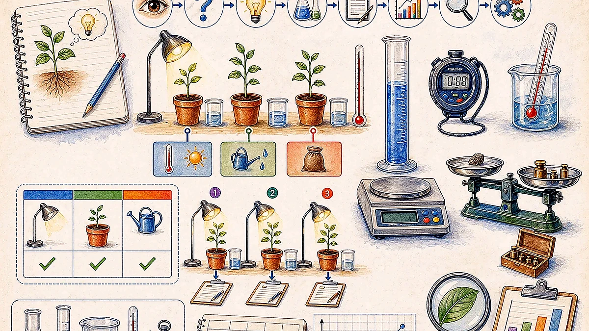
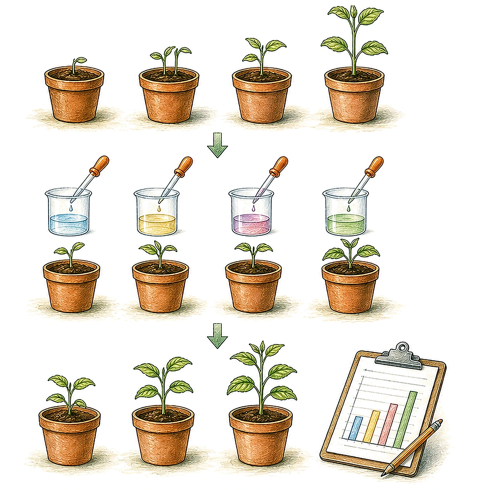
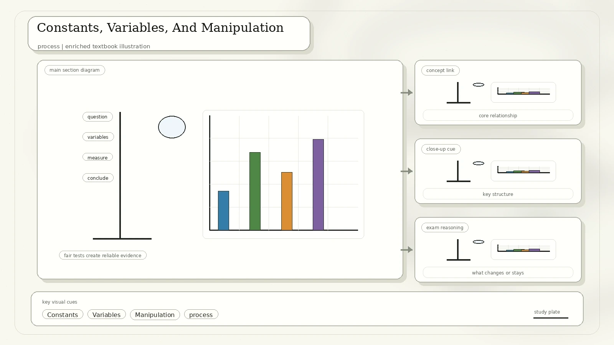
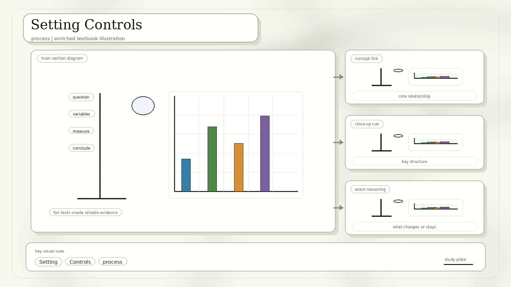
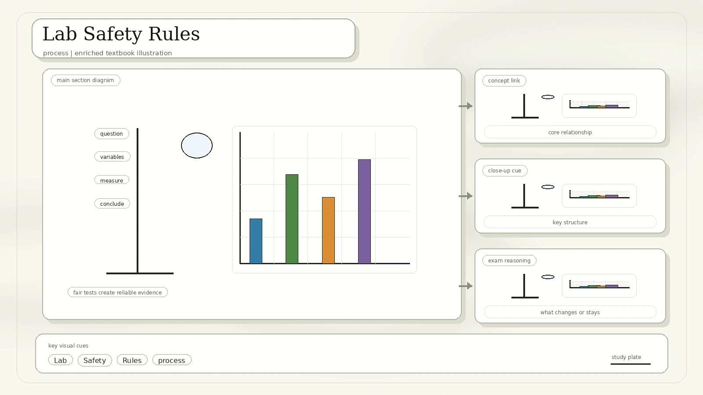
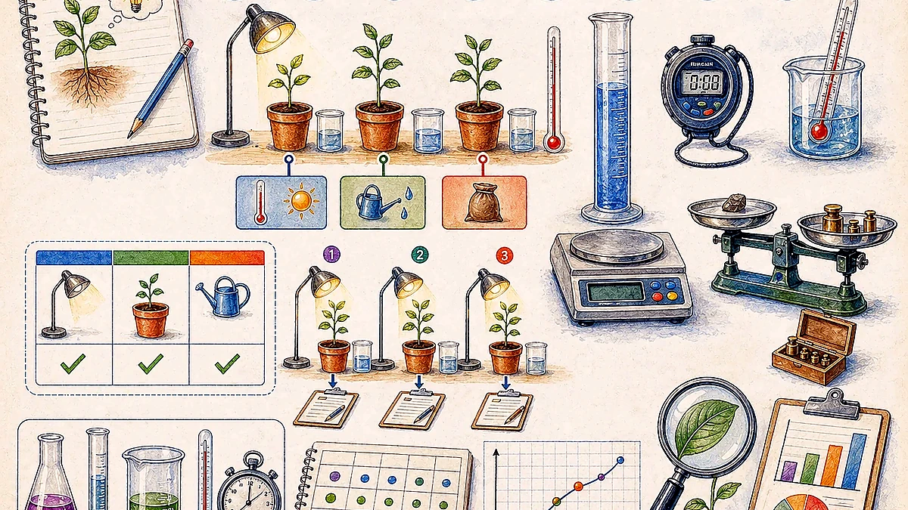
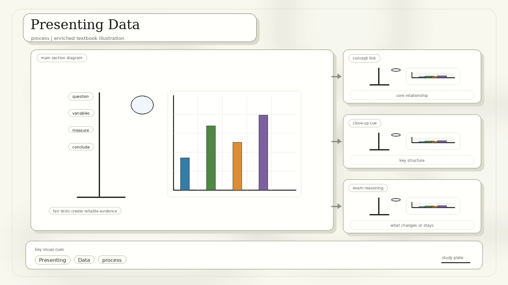
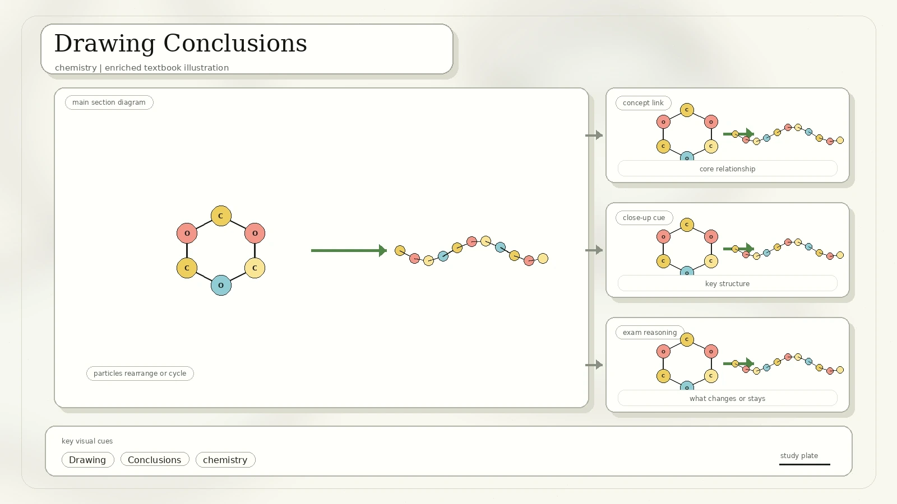
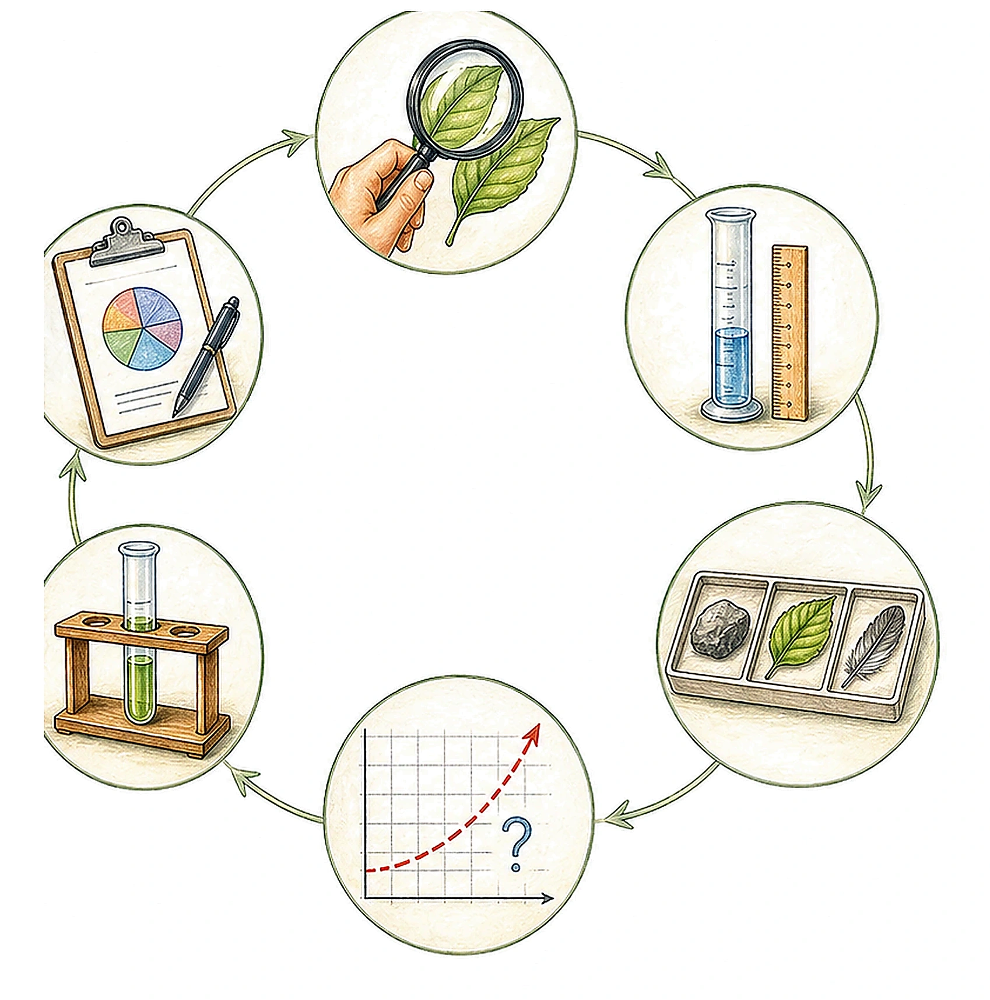
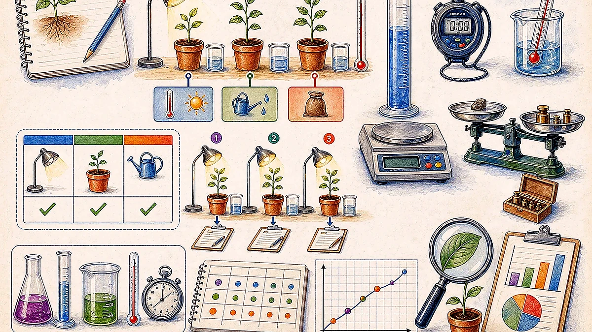

Designing A Science Experiment
The scan introduces experiment design as a sequence: ask a question, do background research, construct a hypothesis, test with an experiment, check whether the procedure works, analyse data, draw conclusions, and communicate results. Experimental data can become background research for the next question.

What exactly are you trying to find out?
A testable expected answer, often written as a prediction.
A controlled method that tests the hypothesis using evidence.
A claim supported by the results, with possible sources of error considered.
Case Study And Procedure Writing
The fertiliser case study models the inquiry cycle. Observation leads to the question, "Which type of fertiliser works the best?" The hypothesis states that plants grown with Fertiliser A will grow fastest. The results are then used to decide whether the hypothesis is supported.

Procedure standard: an experiment requires detailed steps and a materials list. Another scientist should be able to repeat the experiment from your procedure alone, no matter where they are.
| Onion Epidermis Example | Important Detail |
|---|---|
| Materials | Glycerine, methylene blue solution, dropper, toothpick, filter paper, glass slide, compound microscope, distilled water, needle and brush, and cover slip. |
| Sample preparation | Cut the onion, remove a fleshy scale leaf, snap it backward to expose the epidermis, and peel off a thin inner layer. |
| Mounting | Place the epidermis on a slide, add 2-3 drops of distilled water, and lower the cover slip carefully. |
| Staining | Put stain at one end of the slide and draw it over the specimen with filter paper. |
Constants, Variables, And Manipulation
Constants are factors held the same in a controlled experiment. A variable is a factor that can alter the results. To test only one factor, all other factors should be held constant.

The variable you deliberately change. In the plant-growth case study, this is light colour.
The variable influenced by the independent variable. In the plant-growth case study, this is plant height.
Water, soil, temperature, and day/night time must be kept the same so any growth difference can be linked to light colour.
Neither observers nor subjects know who is in the treatment group or control group, or who is receiving the placebo.
A benign treatment is given to the control group so the effect of belief or expectation can be separated from the real treatment effect.
The scan presents discovery, target validation, lead molecule, candidate molecule, animal testing, Phase I, Phase II, Phase III, licensing, and Phase IV surveillance as a staged pipeline.
Setting Controls
A controlled experiment is run more than once: first without changing the factor being tested, and then again while changing only that factor. Controls let scientists compare outcomes and confirm that any dependent variable difference is due to the independent variable, not other factors.

| Control Type | Meaning | Purpose |
|---|---|---|
| Positive control | A control group using a treatment already known to produce results. | Shows the test system can detect an effect. |
| Negative control | A control group using a treatment not expected to produce results. | Shows what happens without an active effect. |
| Placebo or no active treatment | A benign comparison condition in clinical testing. | Separates actual treatment effect from expectation or background change. |
Lab Safety Rules
Good process skills include safe behaviour. The scan lists six laboratory safety rules that apply before data collection begins.

Keep food, drinks, and experiments separate.
Use goggles, gloves, lab coats, or other protection when required.
Tell the teacher or supervisor immediately.
Use proper pipette aids and equipment.
Follow instructions instead of mixing or heating unknown materials casually.
Know the eyewash, shower, fire extinguisher, and exit procedures.
Collecting Data
Good data is specific, detailed, and accurate. Quantitative descriptions or measurements are often helpful. Observations and measurements should be recorded during the experiment instead of after, because it is easy to forget details.

Core warning: without reliable data, conclusions are meaningless.
Presenting Data
Data presentation should fit the question. The scan lists tables, line graphs, bar graphs, circle graphs, and scatter plots.

| Format | Best For |
|---|---|
| Table | Presenting values in rows and columns for exact comparison. |
| Line graph | Showing the relationship between two variables, one on the x-axis and one on the y-axis, especially trends over time. |
| Bar graph | Comparing categories using rectangles of different heights. |
| Circle graph or pie chart | Showing parts of a whole as slices. |
| Scatter plot | Showing whether two sets of data have a relationship or correlation. |
Drawing Conclusions
Conclusions ask whether results support the hypothesis. If results do not support it, the hypothesis should be changed or refined to fit the evidence. Sometimes conclusions require inference from observations and facts, not only direct witnessing.

Ask whether any measurements were inaccurate or imprecise.
Ask whether the procedure was followed correctly and whether it was detailed enough.
Ask how precise the equipment was and whether it was suitable.
Constants are hard to hold perfectly constant, so several repeats improve confidence.
The Six Basic Process Skills
The six process skills are integrated together, important individually, and can be used in logical order. The scan notes that observation and communication are common junior skills, while inference and prediction become especially important for senior students.

What Each Skill Means

| Skill | Meaning From The Scan | How To Use It Well |
|---|---|---|
| Observation | Using the five senses: seeing, hearing, touching, smelling, and tasting. | Record visible details and identify strange or unusual features without jumping too quickly to explanation. |
| Classification | Grouping objects according to a chosen characteristic for a purpose. | State the grouping rule, such as same shape or same colour. |
| Measurement | Using units such as metres for length, litres for volume, grams for mass, newtons for force, and degrees Celsius for temperature. | Choose an appropriate instrument and include units in every measurement. |
| Communication | May be oral, written, or mathematical. | Organise ideas using visual representations, appropriate vocabulary, and mathematical equations. |
| Inference | An explanation or interpretation that follows an observation but differs from the observation itself. | Update the inference when new evidence appears; inferences are continuously constructed. |
| Prediction | An educated guess that forecasts future observations. | Base predictions on observations and inferences, and use them to provide confidence in an inference. |
What To Remember
Question, hypothesis, controlled experiment, data, conclusion, and communication.
Identify the independent variable, dependent variable, constants, controls, and repeatable procedure.
Choose tables, line graphs, bar graphs, pie charts, or scatter plots according to the question.
Observation, communication, classification, measurement, inference, and prediction.